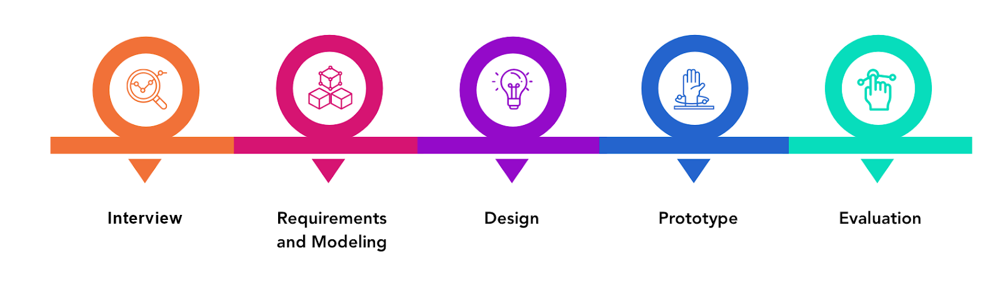
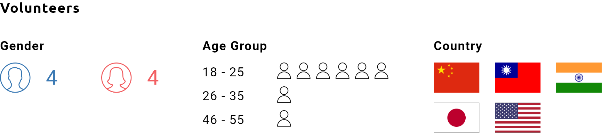
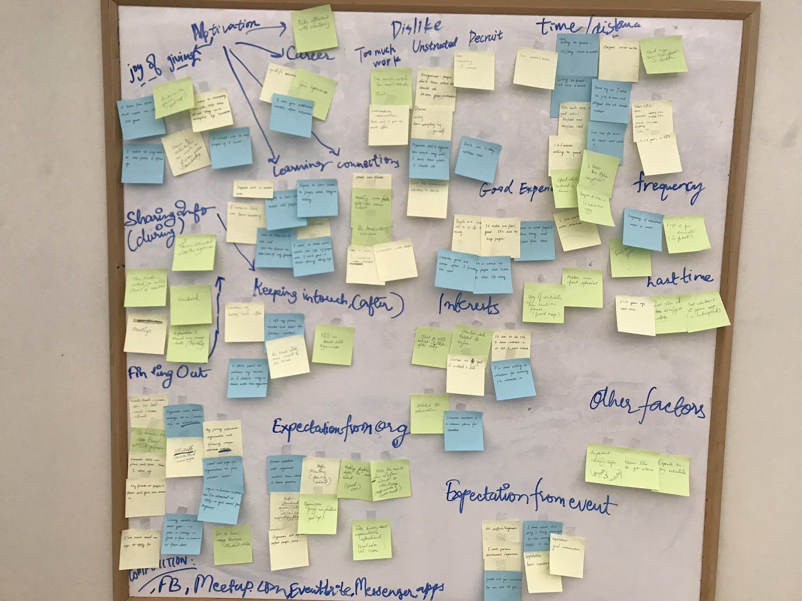
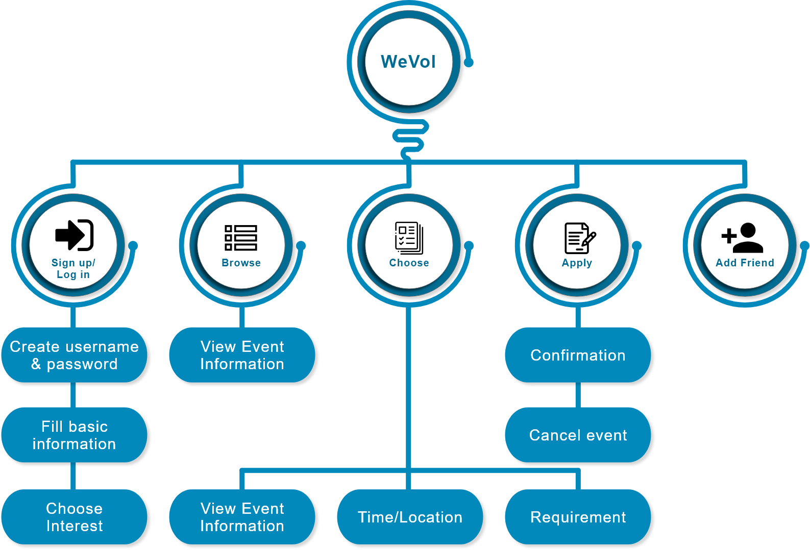
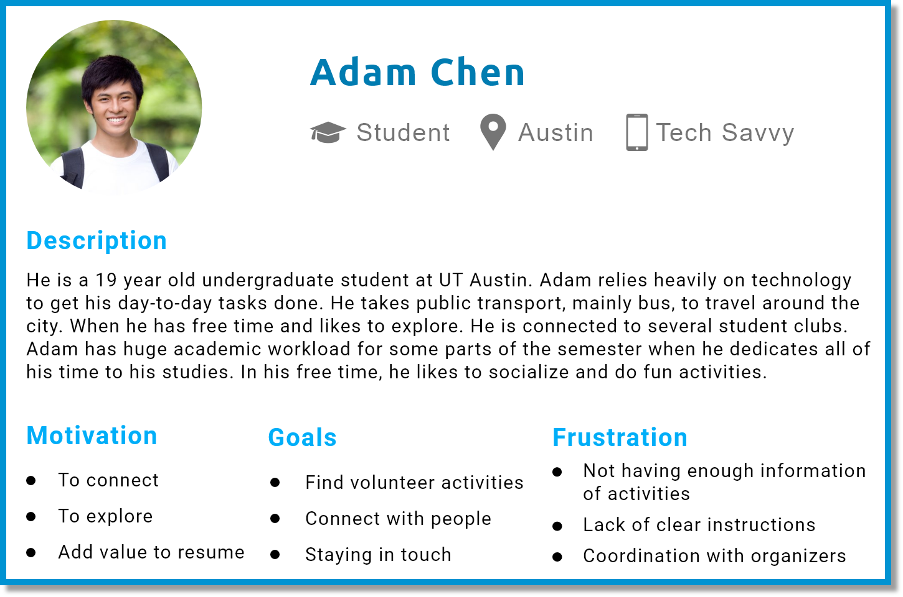
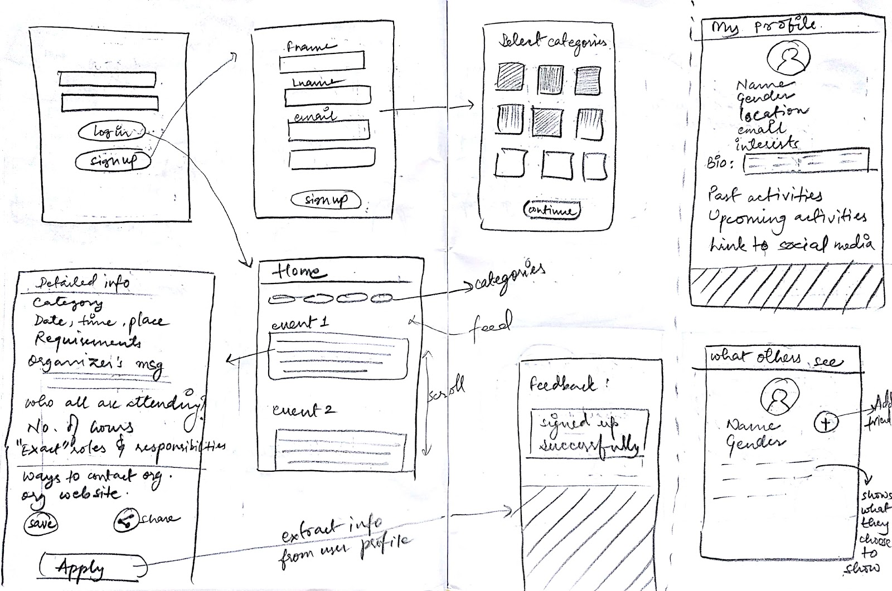
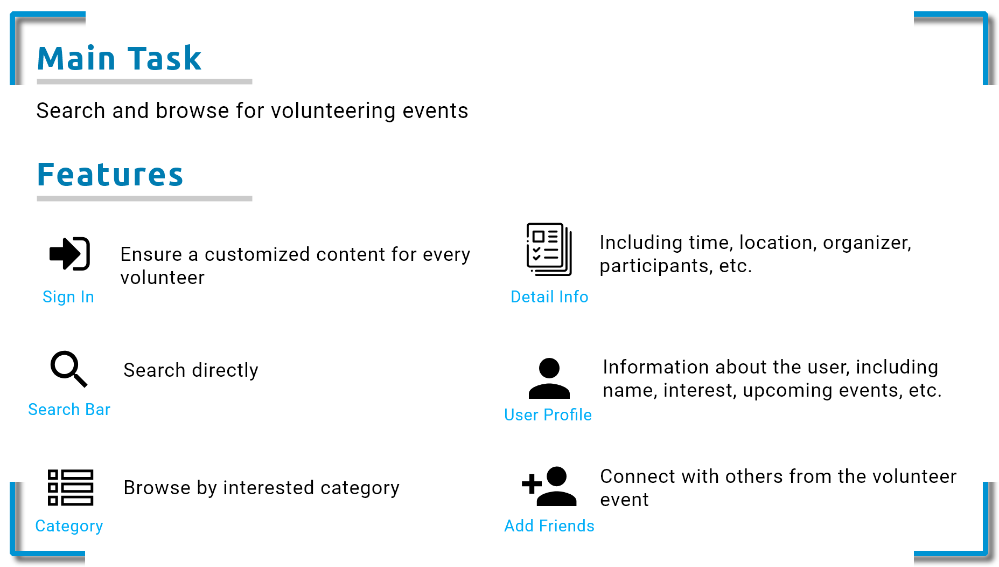
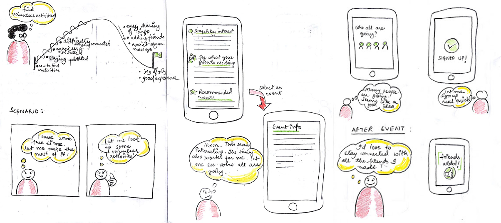

WeVol: Platform to Find Volunteering Opportunities
WeVol is short for we volunteer, a platform for sharing and managing information of volunteer organizations and activities. Our product aims to help volunteers find interested volunteer events through browsing by categories or searching directly. What’s more, the app will recommend volunteering activities based on the user's interests.
Team members: Yu-Kuan Hwang, Ritambhara Singh, Zihan Yang
My Role: UX Researcher and UX Designer
Duration: 3 months
Full ReportOverview
Volunteering can gain a sense of accomplishment while enabling stronger relationships and is beneficial to the society. According to the study of volunteering trend in America in 2015 by the Bureau of Labor Statistics, volunteer rates were lowest among 20 to 24-year-olds (18.4%). We decided tackle this issue by proposing a mobile application as 86% of Americans in this age group uses a smartphone on a daily basis. Thus, our app aims to encourage them to volunteer by making it accessible.
Design Process
Interview
I started off with an interview to learn about our potential target audience. Including painpoints they face, current habits, objectives, and motivation.
Affinity Diagram
I then gathered qualitative data from the interviews and formed them into sticky notes. By categorizing the sticky notes, the affinity diagram gave us insight to:
• Current volunteering process
• Motivations
• Expectations
Fig: Work Activity Affinity Diagram
Requirements & Modeling - Hierarchical Task Inventory
The creation of the hierarchical task inventory pointed out the hierarchical relationships between the tasks and subtasks. In turn helping me determine what features in our app should be more important.
Fig: Hierarchical Task Inventory Model
Design - Persona
I developed a persona based on the qualitative data we extracted from the interviews. The persona is useful as it provides us with goals and characteristics of our target audience.
Design - Ideation & Sketches
I started our ideation process with questions like what is a volunteer event, how people do it, and why people do it. Understanding the meaning of volunteer event gives me insight to the motivation of volunteering. Likewise, understanding how people do it led me to recognize the current flaws of seeking and participating in events. These information are essential since I can propose solutions to the problem space that current platforms may lack.
I started the sketch based on the persona that I came up with. Then I brainstormed the possible features that I concluded from the ideation.
Fig: Sketches of our system
Fig: Main Task and Features
Design - Storyboard
I developed the storyboard based on the workflow model, work roles interaction diagram, and the information flow. The storyboard is used to simply our system's usage.
Prototype
I initially did a low fidelity prototype, and included factors I gathered from the interviews. After doing some pilot test on the low-fi prototype, I adjusted our medium-fi prototype based on the feedbacks.
For the medium-fi prototype, I focused more on the depth of the features rather than the quantity. Since feedback from the pilot test indicated that we tried to cram too much information in the app. Thus, downsizing of the features led to cleaner, simpler, and more easier-to-understand interface.
Low Fidelity Prototype
I started off with a low-fi prototype on Balsamiq as it provides a clear framework of our concept without the distraction of visual elements. The UI of this prototype included elements that we came up with from our own experiences of using other mobile apps.
The low fidelity prototype was made with Balsamiq. Download

Fig: Screenshots of Low-fi wireframes made on Balsamiq
Medium Fidelity Prototype
After understanding the users’ mental model through the low-fi prototype pilot test, our team decided to build a medium fidelity prototype on Figma. We switched to Figma as it is a cloud-based tool which encourages collaboration on a project simultaneously. We referred to iOS design guidelines and adapted the relevant elements from there, considering iOS is the dominent operating system in the US in 2018 (Statcounter, 2019).
Prototype:
Evaluation - Usability Testing
I designed four user tasks to test the usability of our prototype:
1. Create an account to log in WeVol
2. Find the volunteer activity “Habitat for Humanity” in Austin and register for it
3. Approve the friend request from Diana Klaus
4. Cancel the activity you have registered for
I asked users to go through the tasks, requesting that they think out loud so I can understand their thought process. In addition, I also ask them to write down all the steps during each task, and let them rate the difficulty of each task after completing them. Finally, I asked for their thoughts about our prototype.
Future Work
Through the usability test, I learned that there is a need to divide long-term volunteer activities and one-time volunteer activities. Since the objective, time dedicated, training, etc. would be vastly different. In addition, our app should also include function for the organizer of the events, considering they are also an important role in the process of volunteering.